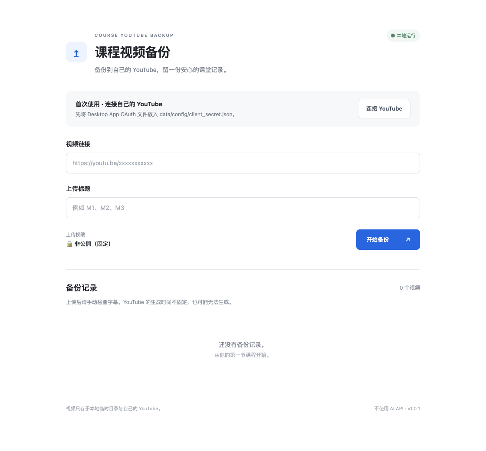

课堂留在 YouTube。
工具留在你的 Mac。
Course YouTube Backup / 课程视频备份工具
把有权备份的课程视频上传到自己的 Private YouTube，
等待自动字幕，再一键复制课堂文字。
macOS · Python · 本地运行 · 无 AI API

从课程链接，到可复制的字幕。
- 粘贴课程链接只处理有权访问且允许备份的视频。
- 输入自己的标题M1、M2、M3，完全由你决定。
- 开始备份最高 1080p，合并音视频后自动上传。
- 固定为 Private所有上传都为非公開，成功后删除临时视频。
- 手动检查自动字幕优先日语 ASR。YouTube 是否生成及 API 是否可获取取决于平台。
- 复制或下载文字保存 SRT 与 TXT；适合自行整理课堂笔记。
第一次配置，以后双击启动。
安装 Python、ffmpeg 与 Deno，下载 Release 并解压。
brew install python ffmpeg deno
chmod +x start.command
./start.command按照 README 启用 YouTube Data API v3，创建 Desktop App OAuth 凭据，将 JSON 放到 data/config/client_secret.json。点击「连接 YouTube」完成授权。
启动后自动打开 http://localhost:8000。这个介绍网站不会处理视频、上传或 Google 授权。
你的课程，你的 Mac，你的频道。
本工具在用户自己的 Mac 本地运行。视频和 OAuth 信息不会发送到本项目的服务器。
- 本项目没有视频处理服务器。
- 视频仅存在于本地临时目录和你自己的 YouTube。
- OAuth credential 仅保存在本机，授权直接连接 Google。
- 字幕和历史记录保存在本机，不上传到 GitHub。
- GitHub Pages 只提供介绍、安装说明和下载入口。
观看权限并不等于转载许可，请取得老师的备份和上传许可。YouTube 不保证生成自动字幕；官方字幕 API 可能拒绝读取或下载，工具会显示真实错误并提供 Studio 入口。
v1.0.1
修复 OAuth 浏览器打开失败时的授权流程，增加手动打开与复制授权链接。保留本地下载、固定私密上传、断点恢复、字幕导出和历史记录。
下载和源码链接将在 GitHub 发布后启用。